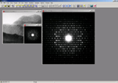

CRISPImage processing of electron micrographsCRISP uses the techniques of crystallographic image processing to extract information from electron micrographs. The techniques are fully applicable to any crystallographic specimen, inorganic, organic or biological.
Easy to use, Productive, Fast CRISP is easy to install, easy to learn and fast to use. The automatic installation procedure takes only minutes, and we can assure you that you will produce useful results on the same day as you receive it. CRISP uses an intuitive Windows interface, and all common commands are immediately available through a toolbar. Extensive on-line help is available at the click of the mouse.Crystallographic averaging gives a vastly increased signal to noise ratio which can be further increased by application of crystallographic symmetry.
Further, advanced processing techniques in the Fourier transform allow correction
for the effects of the contrast transfer function, defocus levels and astigmatism.
Analysis of dislocationsOn the left: the original image, on the right the filtered image after processing by CRISP. A dislocation is clearly seen at 9 o'clock.
Key features
|


{kind=link}